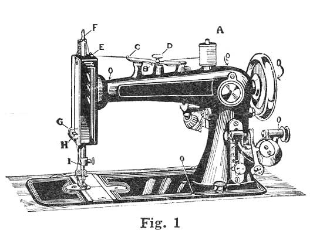
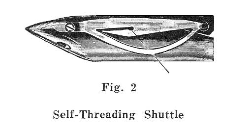

THE NEEDLEBAR
Manuals Section
For operating and adjusting the
REGAL PAVEWAY
ELECTRIC SEWING MACHINE

TO THREAD THE MACHINE
Place the spool on the spool pin A, pass the thread under the curved point of the upper tension spring B, drawing it between the two springs unto the little notch in the center of the under spring at C. By holding back on the thread with the right hand while drawing it between the springs with the left, the pressure of the springs will readily be overcome. If you attempt to draw the thread through the springs with one hand you will be apt to break it. Always have the thread pass back of the tension screw D. Next pass it under the little spring thread guide marked E on top of the arm, then through the slot in the top of the needle bar F. Pass a loop of the thread through the take-up staple G. From the front toward the back, slipping the loop over the end of the take-up H, then under the wire thread guide I on needle clamp, then carry the thread through the eye of the needle from left to right, leaving two or three inches extended.
TO REMOVE THE SHUTTLE
Draw out the front slide plate, turn the machine until the shuttle is nearest the operator, then carefully remove it from its carrier. Do not try to pry it out with the point of a screw driver or any thing that will be apt to injure or bend the shuttle spring.
TO CHANGE THE SELF-SETTING NEEDLE
To take the needle out, raise the needle-bar to its highest point, loosen the needle clamp screw by a slight turn towards you, and slip the needle down until it is free.
To set the needle, take it in the left hand, placing the point through the hole in the needle plate and pass it up into the bar, and be sure you push it up as far as it will go, with the long groove of the needle to your left and the short groove and the flattened shank to the right.
TO THREAD THE SHUTTLE
Hold the shuttle in the left hand with the point toward you. Drop the bobbin into the shuttle so that the thread in sewing will draw from the upper side, then draw the thread into the open slot towards you, at the same time putting a little pressure with your finger upon the end of the bobbin so it cannot turn, the thread will be forced under the lip of the shuttle spring; the shuttle is then threaded ready for use.

Place the shuttle in the carrier point first then towards you, and hold the end of the upper thread loosely by the left hand, turn the fly wheel once around, when the two threads will have become interlocked and can be drawn through the needle plate by an upward movement of the hand. Pass the two thread ends back from you, put the slides into their places over the shuttle, turn the hand wheel until the needle is raised to hits highest point, then put the goods under the presser foot, and drop it down. Now see that the shuttle slides are both closed over the shuttle and the machine is ready to commence sewing.
TO GET REQUIRED LENGTH OF STITCH
On the front part of the upright arm will be found the stitch index. Unfasten the thumb screw by turning it slightly to the left, then slide it upward for longer, and downward for a shorter stitch, turning the thumb screw up first, so it will not jar loose while operating the machine. The stitch index is marked with figures corresponding with the number of stitches to the inch the machine will make when the thumb screw is set opposite.
SKIPPED STITCHES
These are sometimes caused by the needle being too small for the thread, or not being set up as high in the bar as it will go. Also by the needle being bent, or by dirt or lint collecting in the groove cut for the needle in the face of the shuttle race; also by needle being set in wrong with long groove toward shuttle - always have short groove towards the shuttle.
TO REMOVE THE WORK
Allow the needle to rest at its highest point. Raise the presser foot - press down the lever on tension which will release all pressure on the upper thread - then draw two or three inches of slack thread through the tension between it and spring thread guide (C and E figure 1). Then with the left hand draw the work from the left side backward and bring both threads over the back so that they will be drawn across the little knife of the thread cutter and cut.
Back to Online Manuals Index | To Main Index